SIMDUT et classes de danger
Le SIMDUT 2015 est l'application canadienne du Système général harmonisé (SGH). Il classe les produits dangereux en classes physiques, santé et biologiques et impose un système de communication des risques articulé autour de trois piliers : étiquettes, FDS à 16 sections et formation. Le RPD (DORS/2015-17) fixe les critères de classification au Canada, et la LSST (chapitre IV) en assure l'application au Québec via le RSST. En mine, le SIMDUT couvre les réactifs d'usine (cyanure, xanthates, acides, bases, frothers), les huiles et carburants, les solvants d'atelier ; les explosifs et les pesticides sont encadrés par des régimes propres.
Table des matières
- SGH et SIMDUT
- Étapes de classification
- Classes de danger
- Toxicité aiguë et corrosion
- Pictogrammes
- Communication des risques
- Responsabilités
- Cadre légal
- Application terrain
- Ressources
SGH et SIMDUT
Le SGH est un système international développé par l'ONU pour harmoniser la classification et l'étiquetage des produits dangereux. Ses objectifs : harmonisation internationale, facilitation du commerce, amélioration de la communication des dangers, réduction des tests animaux.
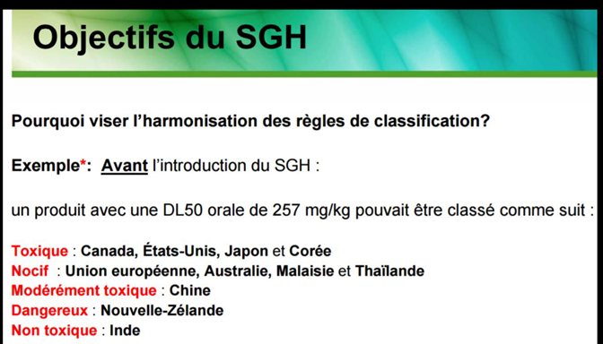
Toucher l'image pour l'agrandir- SGH (Système Général Harmonisé) : système international.
- SIMDUT 2015 : intégration canadienne du SGH (remplace SIMDUT 1988).
- LPD : Loi sur les produits dangereux (fédérale).
- RPD : Règlement sur les produits dangereux (DORS/2015-17).
Le passage de SIMDUT 1988 à SIMDUT 2015 a modifié l'esthétique des pictogrammes, ajouté des classes et restructuré la FDS.
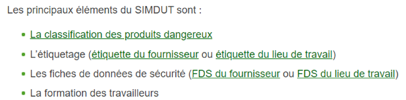
Toucher l'image pour l'agrandirProduits non assujettis : explosifs, cosmétiques, drogues, aliments, produits antiparasitaires, produits de consommation, bois, substances radioactives, déchets, tabac, articles manufacturés. Ces produits demeurent encadrés par d'autres lois (LCSPC, Loi sur les aliments et drogues, Loi sur les produits antiparasitaires).
Deux éléments majeurs du SGH
- Classification selon les critères SGH.
- Communication par étiquettes normalisées et FDS à 16 sections.
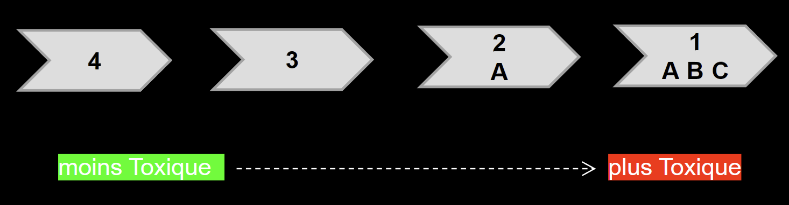
Toucher l'image pour l'agrandirÉtapes de classification
- Identifier les données pertinentes (test sur la substance, sur le mélange, principes d'extrapolation).
- Évaluer les dangers (force probante, jugement d'experts).
- Classer selon les critères du RPD.
Pour les mélanges : les données sur le mélange ont priorité ; sinon, application des seuils sur les ingrédients (synergie et antagonisme à considérer).
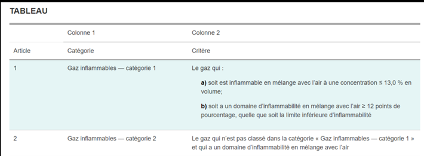
Toucher l'image pour l'agrandirCertaines exclusions s'appliquent à la LPD.
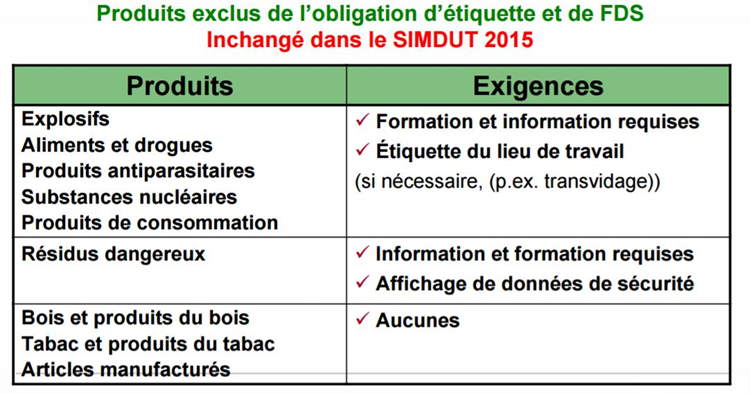
Toucher l'image pour l'agrandirClasses de danger
Vue d'ensemble des classes SGH.
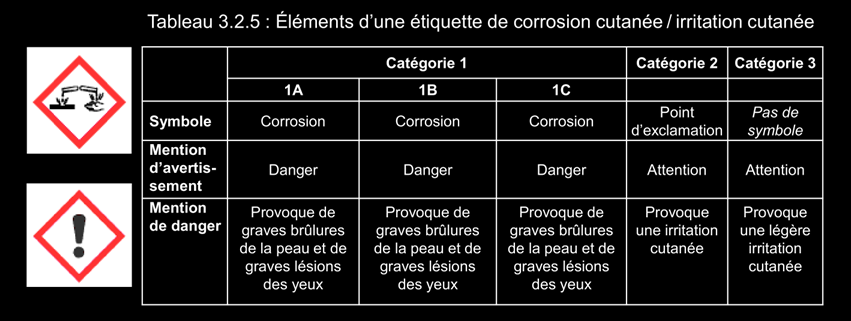
Toucher l'image pour l'agrandir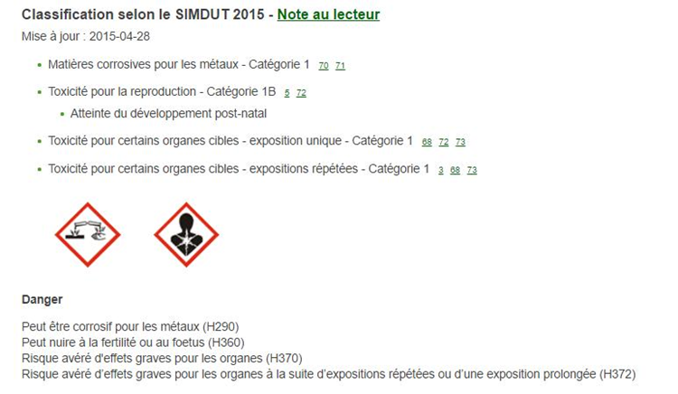
Toucher l'image pour l'agrandirDangers physiques (18 classes)
Gaz inflammables, aérosols inflammables, gaz comburants, gaz sous pression, liquides inflammables, matières solides inflammables, matières autoréactives, liquides ou solides pyrophoriques, matières autoéchauffantes, matières au contact de l'eau dégageant des gaz inflammables, liquides ou solides comburants, peroxydes organiques, matières corrosives pour les métaux, poussières combustibles (classe propre au Canada), Asphyxiants simples et chimiques simples (classe propre au Canada), gaz pyrophoriques, dangers physiques non classifiés.
Dangers pour la santé (12 classes)
| # | Classe |
|---|---|
| 1 | Toxicité, dose-réponse et DL50 aiguë |
| 2 | Corrosion / irritation cutanée |
| 3 | Lésions oculaires graves / irritation oculaire |
| 4 | Sensibilisants respiratoires et cutanés |
| 5 | Cancérogénicité sur cellules germinales |
| 6 | Cancérogénicité |
| 7 | Toxicité pour la reproduction |
| 8 | Toxicité pour certains organes cibles, exposition unique (STOT-SE) |
| 9 | Toxicité pour certains organes cibles, expositions répétées (STOT-RE) |
| 10 | Aspiration et dangers biologiques |
| 11 | Aspiration et dangers biologiques (classe canadienne) |
| 12 | Dangers pour la santé non classifiés |
Dangers pour l'environnement
Danger pour le milieu aquatique, danger pour la couche d'ozone. Le SGH inclut cette catégorie mais elle n'est pas adoptée dans le SIMDUT 2015. Toutefois, les FDS peuvent fournir ces informations.
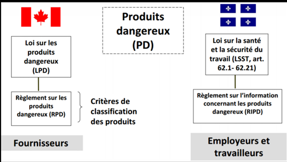
Toucher l'image pour l'agrandirToxicité aiguë et corrosion
Toxicité aiguë
Quatre catégories (cat. 1 = la plus toxique). Critères en DL50 oral, DL50 cutané, CL50 inhalation (gaz, vapeurs, poussières / brouillards).
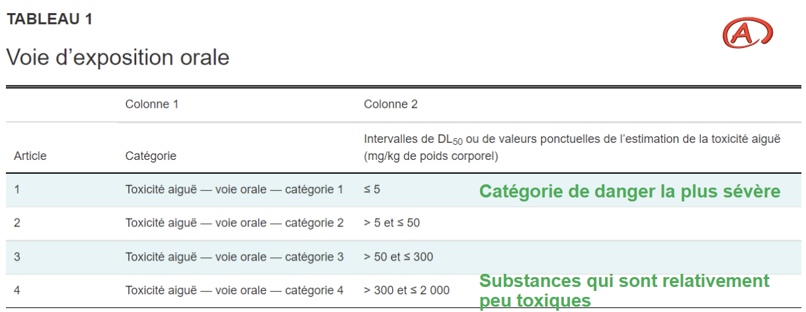
Toucher l'image pour l'agrandir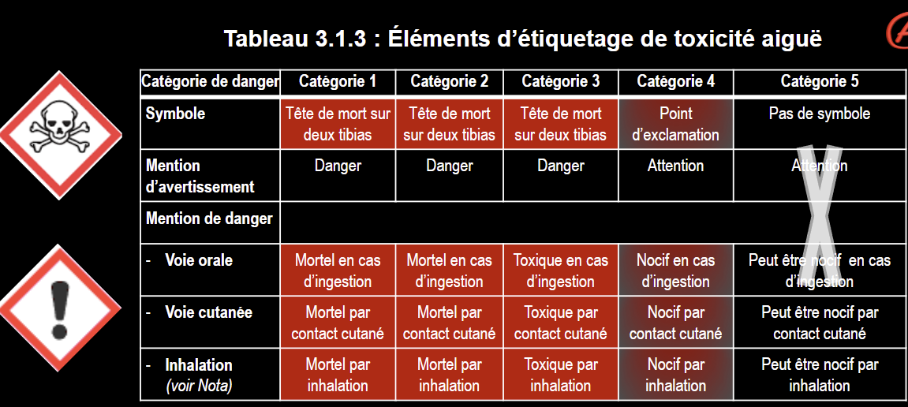
Toucher l'image pour l'agrandirCorrosion et irritation cutanée
Corrosion cutanée (cat. 1) : destruction du tissu cutané. Sous-catégories 1A / 1B / 1C selon durée d'exposition et de récupération. Acides (pH ≤ 2) ou bases (pH ≥ 11,5) à pH extrêmes sont automatiquement cat. 1.
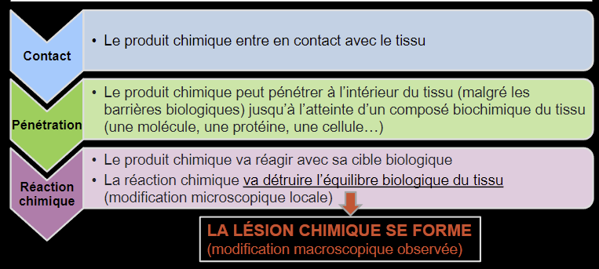
Toucher l'image pour l'agrandirLes acides causent une nécrose de coagulation (lésion limitée en profondeur) ; les bases causent une nécrose de liquéfaction (lésion qui progresse en profondeur, souvent plus grave).
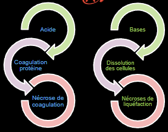
Toucher l'image pour l'agrandir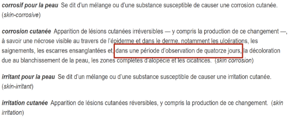
Toucher l'image pour l'agrandir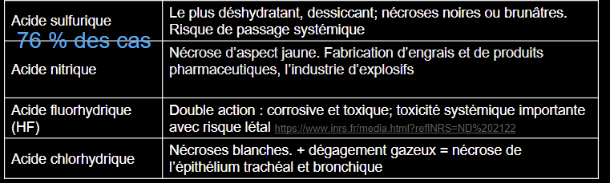
Toucher l'image pour l'agrandir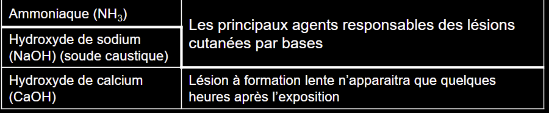
Toucher l'image pour l'agrandirIrritation cutanée (cat. 2) : effets réversibles.
Lésions oculaires
Cat. 1 = grave (≥ 21 jours) ; cat. 2A / 2B = irritation (réversible).
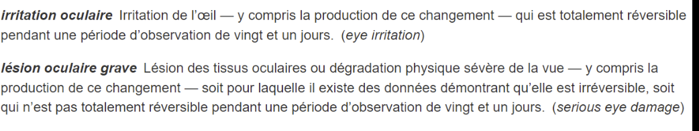
Toucher l'image pour l'agrandirMesures associées : douches d'urgence et douches oculaires obligatoires en présence de corrosifs. Gants et vêtements selon FDS (section 8).
Pictogrammes
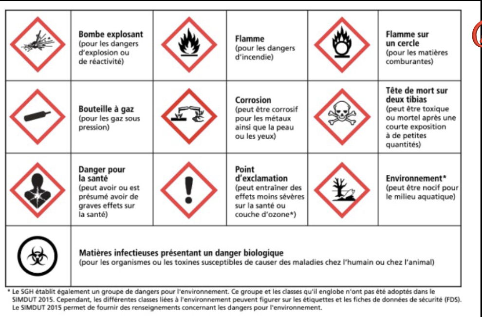
Toucher l'image pour l'agrandir| Pictogramme | Classes / catégories typiques |
|---|---|
| Tête de mort | Toxicité, dose-réponse et DL50 aiguë cat. 1-3 (orale, cutanée, inhalation) |
| Corrosion | Corrosifs (peau cat. 1A-1C), lésion oculaire grave cat. 1, corrosifs pour les Métaux toxiques en milieu de travail |
| Point d'exclamation | Toxicité aiguë cat. 4, irritation cutanée cat. 2, irritation oculaire cat. 2 / 2A, sensibilisation cutanée, STOT-SE cat. 3 |
| Danger pour la santé | Sensibilisation respiratoire, mutagénicité, cancérogénicité, toxicité reproduction, STOT cat. 1-2, danger par aspiration cat. 1 |
| Matières infectieuses | Biorisque cat. 1 |
| Flamme | Inflammables, pyrophoriques, autoréactifs |
| Bouteille de gaz | Gaz sous pression |
| Flamme sur cercle | Comburants |
| Bombe explosant | Explosifs, autoréactifs A / B, peroxydes A / B |
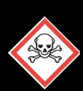
Toucher l'image pour l'agrandirSans pictogramme : gaz inflammables cat. 2, liquides inflammables cat. 4, asphyxiants simples cat. 1, poussières combustibles cat. 1, irritation oculaire cat. 2B.
Mentions d'avertissement : « Danger » (gravité élevée) ou « Attention » (gravité moindre). Sur l'étiquette seulement.
Communication des risques
Les composantes de l'étiquette du fournisseur sont normalisées.
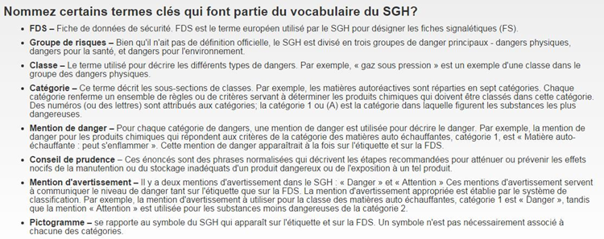
Toucher l'image pour l'agrandirA. Étiquette du fournisseur
Identificateur du produit, identificateur du fournisseur, mention d'avertissement (Danger ou Attention), mentions de danger (H), conseils de prudence (P), pictogrammes SGH, renseignements supplémentaires.
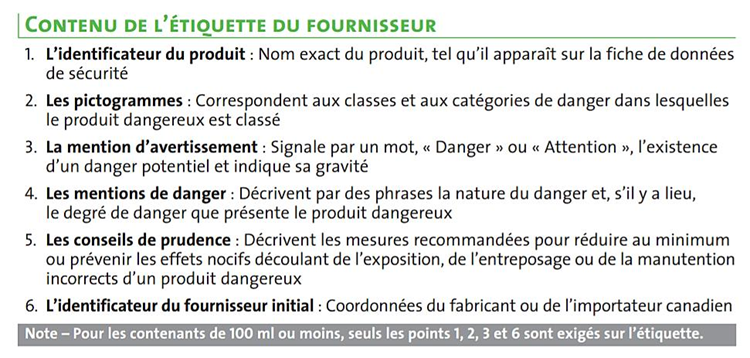
Toucher l'image pour l'agrandir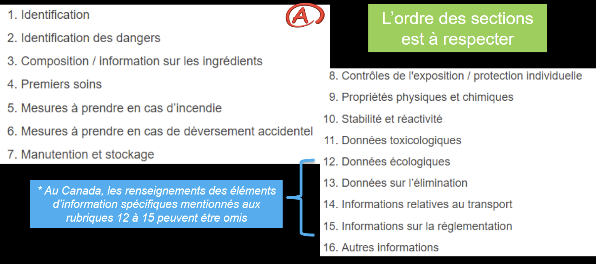
Toucher l'image pour l'agrandirB. Étiquette de lieu de travail
Pour produits transvasés, produits fabriqués sur place, contenants secondaires : identificateur du produit, mesures de précaution (manipulation sécuritaire), référence à la FDS disponible.
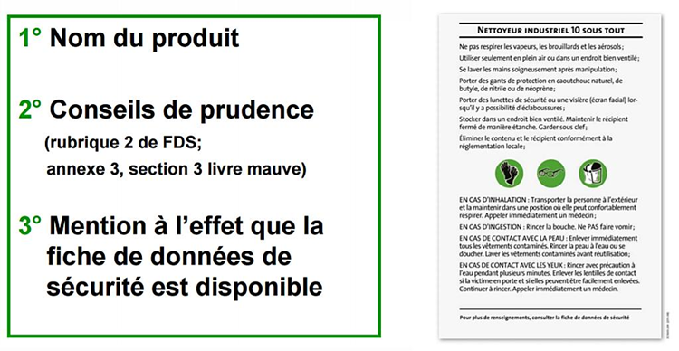
Toucher l'image pour l'agrandirC. FDS (Fiche de données de sécurité)
16 sections normalisées.
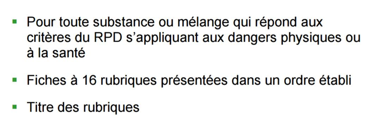
Toucher l'image pour l'agrandir- Identification du produit.
- Identification des dangers.
- Composition / ingrédients.
- Premiers soins.
- Mesures de lutte contre l'incendie.
- Mesures en cas de déversement.
- Manipulation et stockage.
- Contrôle de l'exposition / protection individuelle.
- Propriétés physiques et chimiques.
- Stabilité et réactivité.
- Données toxicologiques.
- Données écologiques.
- Données sur l'élimination.
- Informations relatives au transport.
- Informations sur la réglementation.
- Autres informations.
Seuil de déclaration : varie par classe. Exemple : toxicité reproduction cat. 1 = seuil 0,1 % d'ingrédient cat. 1A / 1B.
D. Formation et information
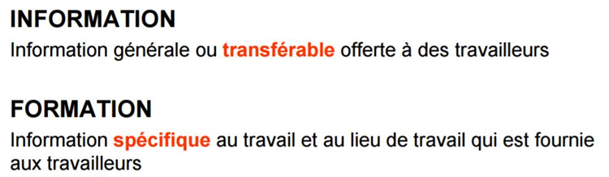
Toucher l'image pour l'agrandir- Connaître les dangers du produit.
- Lire et interpréter les étiquettes et FDS.
- Procédures sécuritaires.
- Mesures d'urgence.
- À renouveler aux 3 ans ou lors de changements.
Responsabilités
Fabricant / fournisseur
- Classer le produit.
- Préparer l'étiquette du fournisseur conforme.
- Préparer la FDS en 16 sections normalisées.
- Mettre à jour la FDS au besoin (au moins tous les 3 ans).
Employeur
- S'assurer que tout produit dangereux dans le lieu de travail est étiqueté.
- Mettre à disposition les FDS (à jour, accessibles).
- Former les travailleurs (généralement aux 3 ans ou si changement).
- Préparer les étiquettes de lieu de travail au besoin (transvasement, produits sans étiquette, produits fabriqués sur place).
Travailleur
- Suivre la formation.
- Utiliser les produits selon les instructions.
- Signaler les étiquettes manquantes ou endommagées.
Cadre légal
- Loi sur les produits dangereux (fédérale, LPD).
- Règlement sur les produits dangereux (RPD, DORS/2015-17).
- LSST chapitre IV : application au Québec via le RSST.
- Reptox (CNESST) : base de données toxicologiques.
Voir aussi VEA et normes RSST pour les valeurs limites et Maladies professionnelles en mine pour les indicateurs toxicologiques.
Application terrain
Produits SIMDUT typiques en mine
| Produit | Type | Dangers principaux |
|---|---|---|
| Cyanure de sodium (lixiviation Au) | Solide toxique aigu | Toxicité, dose-réponse et DL50 aiguë sévère, formation de HCN au contact d'acide |
| Xanthates (flottation) | Sensibilisant cutané | Allergie, dégagement de CS2 |
| Acide sulfurique (procédé) | Corrosif | Brûlures, vapeurs irritantes |
| Soude caustique (NaOH) | Corrosif | Brûlures alcalines |
| Frothers (MIBC, polyglycols) | Inflammable, irritant | Vapeurs, contact cutané |
| Émulsions et explosifs (ANFO, dynamite) | Explosif, gaz toxiques | Gaz de tir (CO, NOx) |
| Carburant diesel, huiles hydrauliques | Inflammable, danger santé | COV, contact cutané |
| Solvants organiques d'atelier (dégraissants) | Inflammable, neurotoxique | Vapeurs, ototoxicité |
| Béton, ciment | Corrosion (alcalin, pH 12-13), sensibilisation cutanée Cr (VI) | Voir Sensibilisants respiratoires et cutanés |
Encadrement parallèle
| Famille | Encadrement |
|---|---|
| Explosifs | Non assujettis SIMDUT. Loi sur les explosifs (fédérale). |
| Pesticides (rongicides, biocides forage) | Non assujettis SIMDUT. Loi sur les produits antiparasitaires (ARLA). |
Particularités minières
- Cyanure : risques croisés avec acidité (formation de HCN), procédures de mélange et stockage encadrées.
- Plan d'urgence chimique du site (PIU) doit articuler les FDS, les EPI et les équipes d'intervention.
- Sous-traitants (entreprises de services miniers) : leur conformité SIMDUT doit être vérifiée à l'arrivée.
- Un site minier maintient typiquement un registre central des FDS (papier ou électronique) et une formation SIMDUT initiale + recyclage triennal.
Ressources
| Document | Type | Source |
|---|---|---|
| Loi sur les produits dangereux | Loi | Gouvernement du Canada |
| Règlement sur les produits dangereux | Règlement | Gouvernement du Canada |
| Reptox | Base de données | CNESST, rôles et pouvoirs |
| Guide SIMDUT 2015 | Guide | Santé Canada |
| Modèle d'étiquette lieu de travail | Gabarit | À développer en interne |
| FDS site (registre) | Registre interne | À maintenir |
| Affichage SIMDUT par zone | Outil terrain | Site minier |
Articles wiki connexes
Pages qui pointent ici (15)
- 🎯 Démarrage rapide, conseiller SST Hygiène industrielle
- 🏠 Wiki Hygiène industrielle, mines Hygiène industrielle
- Agresseurs chimiques Hygiène industrielle
- Amiante Hygiène industrielle
- art-41-RSST Hygiène industrielle
- Asphyxiants simples et chimiques Hygiène industrielle
- Aspiration et dangers biologiques Hygiène industrielle
- Gestion du SIMDUT et FDS en mine Hygiène industrielle
- Hiérarchie des moyens de prévention Hygiène industrielle
- Lire une FDS rapidement Hygiène industrielle
- Mettre en place un programme d'hygiène industrielle Hygiène industrielle
- Outils de priorisation des risques chimiques Hygiène industrielle
- Solvants organiques Hygiène industrielle
- Substances dangereuses Hygiène industrielle
- VEA et normes RSST Hygiène industrielle